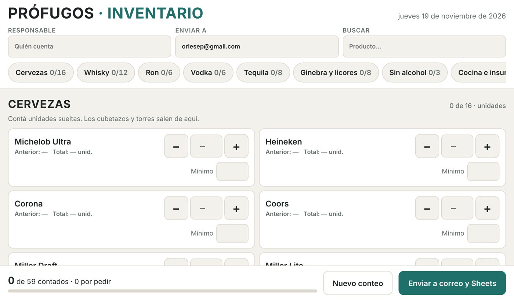
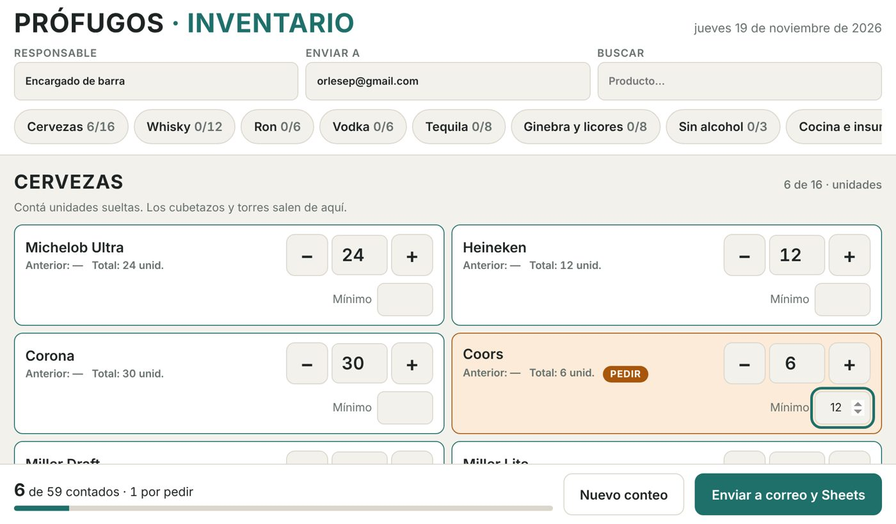
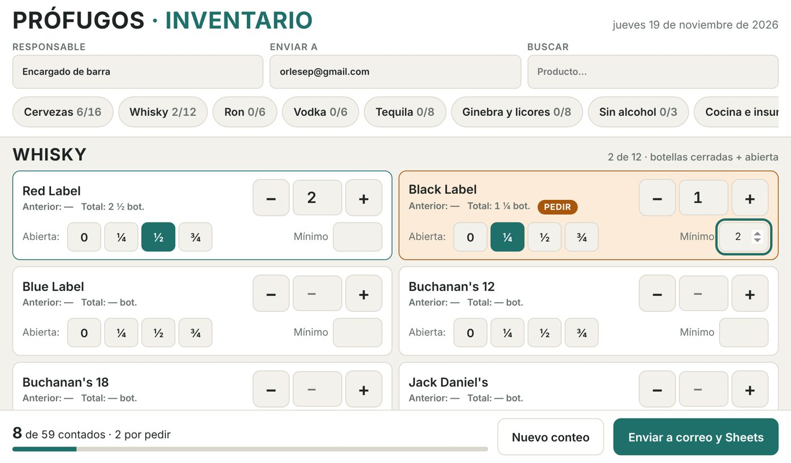
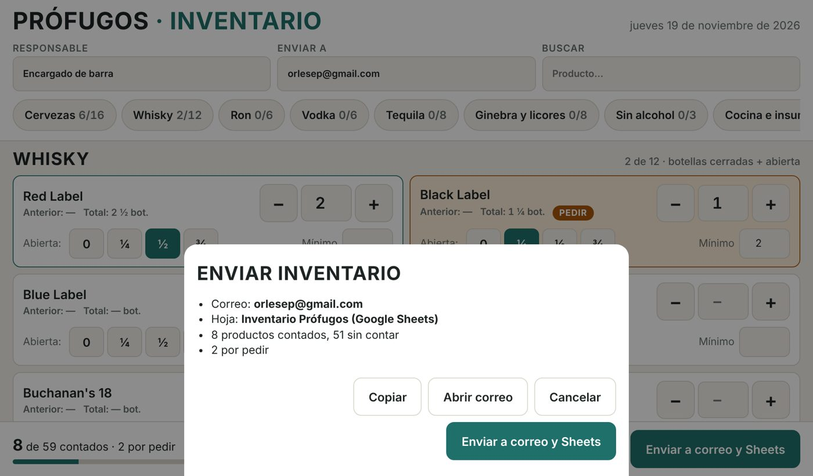
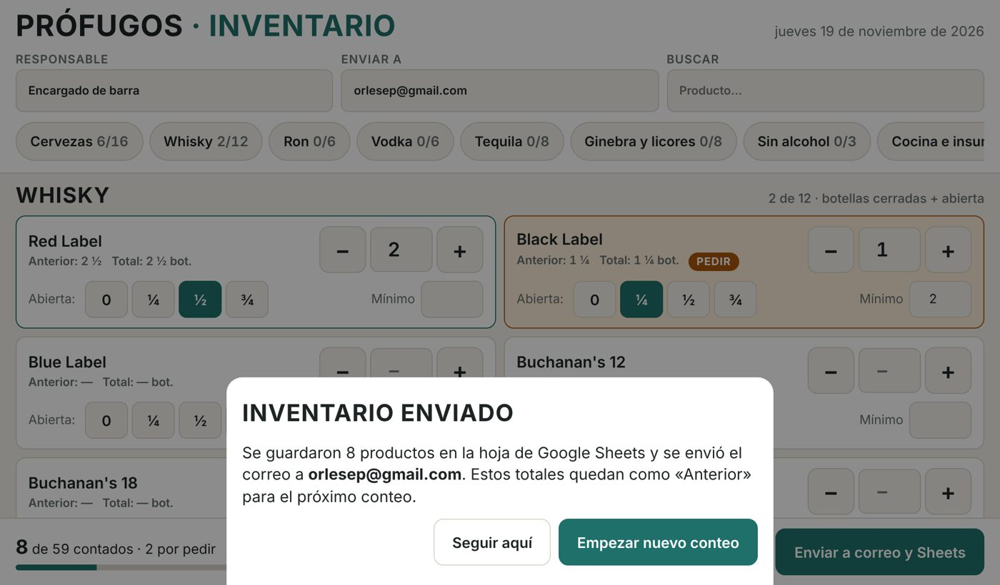
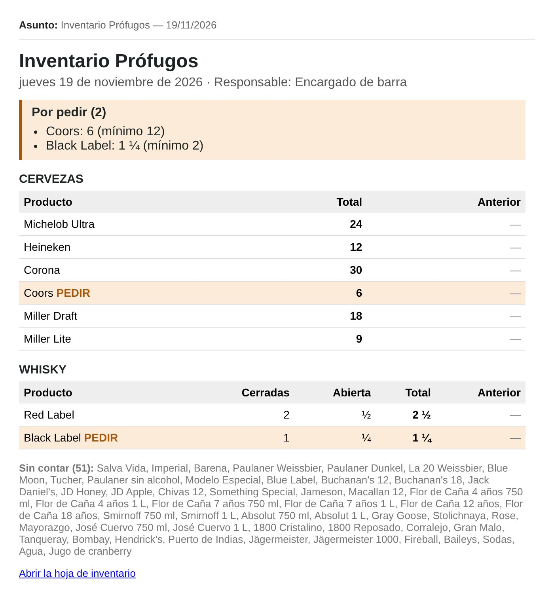

Abrir la app en la Fire
La app está en esta dirección. No hace falta iniciar sesión en nada:
Todo en minúsculas, con guiones y con la barra del final.
- Conectá la tablet al wifi. Hace falta internet para abrirla la primera vez y para enviar. Para contar funciona sin internet.
- Abrí Silk y escribí la dirección, o tocá el botón verde de arriba.
- Si en la barra de la dirección o en el menú de Silk aparece Instalar app o Agregar a la pantalla de inicio, tocalo. Queda el ícono verde con la «P».
- Si no aparece, hacé que Silk abra directo en la app: menú de Silk → Configuración → Página de inicio → Página personalizada, y pegá la dirección. Así, cada vez que abrís Silk, se abre el inventario.
- Tocá también la estrella ☆ para guardarla en Favoritos.
Partes de la pantalla
La app trae todos los productos del menú: cervezas, whisky, ron, vodka, tequila, ginebra y licores, sin alcohol, y una sección para insumos de cocina.

- Responsable: quien hace el conteo. Sale en el correo y en la hoja.
- Enviar a: fijo en orlesep@gmail.com. No se puede cambiar, así nadie puede desviar el reporte.
- Buscar: escribí parte del nombre (por ejemplo «flor») para ver solo esos productos.
- Categorías: tocá una para saltar a esa sección. «Cervezas 6/16» quiere decir 6 contadas de 16. Se pone verde al completarla.
- Barra de abajo: cuántos llevás contados, cuántos están por pedir, y los botones Nuevo conteo y Enviar a correo y Sheets.
Cómo contar
Cervezas, sodas y agua (unidades). Usá + y –, o tocá el número y escribilo. Contá unidades sueltas: los cubetazos y las torres salen de estas mismas cervezas.

Licores (botellas). En el número van las botellas cerradas. La abierta se marca con 0, ¼, ½ o ¾ según lo que le queda. La app suma ambas en el Total.

- Un producto queda contado al tocar + o –, o al escribir un número. Si no hay, poné 0 para que no salga como «sin contar».
- Para borrar un conteo, dejá vacío el número.
- Cocina e insumos viene vacía: escribí el nombre en «Agregar producto» y tocá Agregar. Sirve en cualquier categoría. Los productos agregados tienen botón Quitar.
- Al final hay Notas para quebradas, faltantes o pedidos pendientes. Salen en el correo.
Mínimos y alerta «PEDIR»
Cada producto tiene una casilla Mínimo. Si el total queda por debajo, la fila se pinta de naranja, aparece PEDIR, el producto sale en «Por pedir» al principio del correo y queda resaltado en la hoja. Con el mínimo vacío, el producto nunca se marca. Los mínimos se quedan guardados de un conteo a otro.
Enviar el inventario
- Tocá Enviar a correo y Sheets en la barra de abajo.
- Revisá el resumen: correo, hoja, cuántos contaste, cuántos faltan y cuántos están por pedir.
- Tocá el botón verde Enviar a correo y Sheets de la ventana.
- Cuando diga Inventario enviado, elegí Empezar nuevo conteo o Seguir aquí.


Lo que llega al correo
Llega a orlesep@gmail.com con el asunto «Inventario Prófugos» y la fecha. Arriba va Por pedir, luego una tabla por categoría con la columna Anterior, la lista de sin contar, tus notas y un enlace a la hoja.

La hoja de Google Sheets
Cada envío también se guarda en la hoja Inventario Prófugos, que tiene dos pestañas:
- Último conteo: se reemplaza en cada envío. Es la foto de cómo está el bar ahora.
- Conteos: el historial completo. Cada envío agrega sus filas con fecha y responsable, sin borrar nada.
Columnas: Fecha, Responsable, Categoría, Producto, Cerradas, Abierta, Total, Anterior, Mínimo y Estado. Las filas con estado PEDIR salen resaltadas.
Después de enviar
- Los totales enviados quedan como Anterior. En el siguiente conteo ves cuánto bajó cada producto.
- Nuevo conteo borra cantidades y notas. No borra mínimos, productos agregados ni el último inventario enviado.
- Si cerrás la app a medio conteo, al volver en la misma tablet sigue donde quedó.
Rutina recomendada
- Contar una vez por semana, el mismo día y antes de abrir (por ejemplo, el lunes).
- Contar por zonas y siempre en el mismo orden: bodega, refrigeradoras, barra.
- Comparar «Anterior» con las ventas de la semana. Si baja más de lo vendido, hay merma o faltante.
- Usar «Por pedir» del correo para armar el pedido a proveedores.
Problemas y soluciones
| Qué pasa | Qué hacer |
|---|---|
| Sale «404» o «Site not found» | Revisá la dirección letra por letra: orlesep-code.github.io/inventario-profugos/. Después recargá la página. |
| No aparece «Agregar a la pantalla de inicio» | Poné la app como página de inicio de Silk (ver Abrir la app) y guardala en Favoritos. |
| «La tablet no tiene internet» | Conectate al wifi y tocá Enviar otra vez. El conteo no se pierde. |
| «No llegó la confirmación» | Puede que sí se haya guardado. Revisá la hoja o tu correo antes de enviar de nuevo, para no duplicar. |
| «La hoja respondió con un error» | Probá de nuevo en un rato. Si sigue, usá «Abrir correo» y avisá. |
| No llega el correo | Buscá en Spam o Promociones de orlesep@gmail.com. |
| Desaparecieron mínimos o conteos | Se borraron los datos de Silk o se usó otra tablet. Volvé a poner los mínimos. Lo enviado sigue en la hoja. |